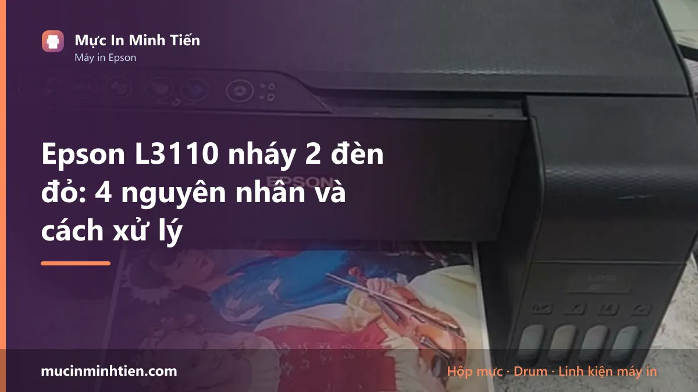
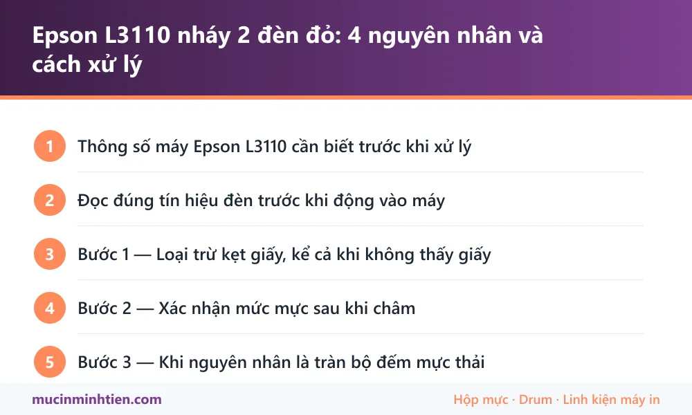

Epson L3110 nháy 2 đèn đỏ: 4 nguyên nhân và cách xử lý

Epson L3110 nháy 2 đèn đỏ cùng lúc thường do bốn nguyên nhân: kẹt giấy hoặc còn mảnh giấy sót bên trong, chưa xác nhận mức mực sau khi châm, tràn bộ đếm mực thải, hoặc lỗi phần cứng ở cụm đầu phun. Máy này không có màn hình nên toàn bộ thông tin lỗi nằm ở tổ hợp đèn.
Thông số máy Epson L3110 cần biết trước khi xử lý
Biết đúng máy mình đang dùng loại nào giúp khỏi mua nhầm vật tư và khỏi làm theo hướng dẫn của dòng khác.
| Hạng mục | Chi tiết |
|---|---|
| Kiểu máy | Đa năng — in, scan, copy. Không có bản fax |
| Kết nối | Chỉ USB, không có Wi-Fi (bản có Wi-Fi là L3150) |
| Mực dùng | Epson 003 — bốn màu BK / C / M / Y, dạng chai châm vào bình |
| Màn hình | Không có. Mọi thông báo lỗi đọc qua tổ hợp đèn |
| Bộ đếm mực thải | Có. Đầy thì máy khoá và báo Service Required |
Đọc đúng tín hiệu đèn trước khi động vào máy
L3110 chỉ có ba đèn: nguồn, giấy, và mực. Không màn hình nghĩa là bạn phải đọc tổ hợp, và đọc sai thì sửa sai.
- Đèn giấy và đèn mực nháy xen kẽ — thường là kẹt giấy hoặc còn dị vật trong đường dẫn.
- Cả hai nháy đồng thời, liên tục — nghiêng về lỗi phần cứng hoặc bộ đếm mực thải đã đầy.
- Đèn mực sáng đứng yên — máy đang báo hết mực hoặc chưa xác nhận mức mực, chưa phải lỗi nặng.
- Đèn nguồn nháy chậm khi khởi động — máy đang tự kiểm tra, đợi cho xong đã.
Ghi lại kiểu nháy trước khi tắt máy. Tắt rồi bật lại là mất tín hiệu, và kỹ thuật viên sẽ phải mò lại từ đầu.
Bước 1 — Loại trừ kẹt giấy, kể cả khi không thấy giấy
Đây là nguyên nhân phổ biến nhất và cũng dễ bỏ sót nhất, vì mảnh giấy rách thường nằm khuất.
- Tắt máy, rút điện, đợi khoảng năm phút.
- Mở nắp trên, soi đèn pin dọc khe giấy đi qua.
- Kiểm tra cả khay sau và khe ra giấy phía trước.
- Thấy mảnh giấy thì kéo theo chiều giấy đi, chậm và đều tay.
- Kiểm tra thêm xem có kẹp giấy, ghim, hay mẩu nhựa nào rơi vào không.
Nhiều ca L3110 báo đèn kẹt giấy mà mở ra không thấy gì — nguyên nhân là con lăn bám bụi giấy nên trượt, cảm biến không nhận được giấy đi qua và máy hiểu là kẹt. Lau con lăn bằng khăn ẩm rồi để khô là hết.
Bước 2 — Xác nhận mức mực sau khi châm
Đây là bước rất nhiều người bỏ qua. Máy dòng L không có cảm biến đo mực thật trong bình; nó đếm theo phần mềm. Châm mực xong mà không báo cho máy biết thì nó vẫn tưởng đang cạn và tiếp tục báo lỗi.
- Châm đầy mực vào các bình, đậy nắp kín.
- Trên máy, giữ nút giọt mực khoảng năm giây cho tới khi đèn phản hồi.
- Hoặc mở Epson Printer Utility trên máy tính, chọn chức năng đặt lại mức mực.
- In thử một trang để kiểm tra.
Nếu bản in ra bị thiếu màu hoặc sọc ngang sau khi châm, đó là đầu phun chứ không phải mực — xem cách vệ sinh đầu phun Epson đúng thứ tự để không tốn mực vô ích.
Bước 3 — Khi nguyên nhân là tràn bộ đếm mực thải
Mỗi lần vệ sinh đầu phun, máy xả một lượng mực vào tấm thấm bên trong. Máy đếm số lần đó; đủ ngưỡng thì khoá lại để mực không tràn ra ngoài. Đây không phải hỏng hóc mà là cơ chế bảo vệ.
Dấu hiệu nhận biết: máy báo Service Required hoặc Maintenance Box, hai đèn nháy đồng thời và không hết sau khi đã loại trừ kẹt giấy lẫn mực.
Hai việc phải làm cùng nhau: đặt lại bộ đếm và vệ sinh hoặc thay tấm thấm mực thải. Chỉ đặt lại bộ đếm mà bỏ qua tấm thấm thì vài tuần sau mực tràn ra bàn thật — đây là lỗi hay gặp khi tự làm theo hướng dẫn trên mạng. Chi tiết cơ chế có ở bài tràn bộ đếm mực thải Epson.
Bảng tra: dấu hiệu nào ứng với nguyên nhân nào
| Dấu hiệu | Nguyên nhân | Cách xử lý | Chi phí |
|---|---|---|---|
| Đèn giấy và mực nháy xen kẽ | Kẹt giấy hoặc dị vật | Soi đèn, gỡ theo chiều giấy đi | 0 – 150.000 đ |
| Mở ra không thấy giấy mà vẫn báo kẹt | Con lăn bám bụi, trượt | Lau con lăn bằng khăn ẩm | 0 đ |
| Vừa châm mực xong vẫn báo lỗi | Chưa xác nhận mức mực | Giữ nút giọt mực 5 giây | 0 đ |
| Hai đèn nháy đồng thời, không hết | Tràn bộ đếm mực thải | Đặt lại bộ đếm + thay tấm thấm | từ 200.000 đ |
| In thiếu màu, sọc ngang sau khi châm | Tắc đầu phun | Nozzle Check rồi Head Cleaning | 0 – 150.000 đ |
| Nháy đèn kèm tiếng kêu lạ khi khởi động | Kẹt cụm đầu phun hoặc bơm | Cần kỹ thuật viên mở máy | Cần kiểm tra |
Vật tư cho Epson L3110 có sẵn tại kho 77 Bắc Hải, Phường Diên Hồng, TP.HCM — xem bảng giá 773 mã hoặc gọi 0915 510 203 kèm model máy.
Khi nào nên gọi kỹ thuật viên
- Đã loại trừ kẹt giấy và xác nhận mực mà đèn vẫn nháy
- Máy báo Service Required — cần đặt lại bộ đếm kèm thay tấm thấm, không nên tự làm bằng phần mềm trôi nổi
- Có tiếng kêu lạ hoặc cụm đầu phun kẹt cứng không chạy
- Đầu phun tắc nặng, chạy Head Cleaning ba lần vẫn thiếu màu
- Máy dùng cho công việc gấp, không có thời gian thử từng bước
Báo giá xử lý Epson L3110 tận nơi
| Hạng mục | Giá tham khảo |
|---|---|
| Kiểm tra, vệ sinh đường giấy và con lăn | từ 100.000 đ |
| Vệ sinh đầu phun chuyên sâu | từ 150.000 đ |
| Đặt lại bộ đếm mực thải kèm vệ sinh tấm thấm | từ 200.000 đ |
| Thay tấm thấm mực thải | Báo giá theo tình trạng |
| Châm mực 003 bốn màu | từ 60.000 đ/màu |
Kỹ thuật viên kiểm tra và báo giá trước khi làm — xem cam kết ở dịch vụ sửa máy in tận nơi TP.HCM.
Cách phòng tránh tái phát
- Đừng chạy Head Cleaning liên tục. Mỗi lần chạy là một lần xả mực vào tấm thấm, đẩy bộ đếm đầy nhanh hơn. Chạy tối đa ba lần rồi để máy nghỉ vài giờ.
- In vài trang mỗi tuần. Máy phun để lâu không dùng thì mực khô trong đầu phun, và cách chữa duy nhất lại là Head Cleaning — vòng luẩn quẩn.
- Châm mực đúng loại 003. Mực sai chủng loại làm tắc đầu phun nhanh và khó thông lại.
- Đậy kín nắp bình mực sau khi châm, tránh bụi và bay hơi.
- Dùng giấy khô, đúng định lượng — giấy ẩm dễ kẹt và làm bẩn con lăn.
